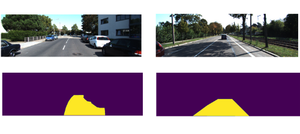

Image segmentation¶
In the last chapter, we trained a model to classify animal images using pytorch lightning as our framework. In this chapter, instead of classifying the images into a category, we will segment roads present in the image as shown below(the the segmented part of road is shown in green color):

If we are segmenting roads in an image, what the models is trying to do is predict whether each pixel in the input image belongs to a road or not:
As you can see, the pixels that belong to the road should be equal to 1 and all other pixels should be equal to 0.
Dataset¶
The dataset we will be using for road segmentation can be found here. This is how the directory structure of our dataset looks like:
kittiroadsegmentation
├── testing
└── training
├── calib
├── gt_image_2
└── image_2
All the data that we will be using for this chapter is inside the ‘training’ folder. The training folder has two sub-folders, gt_image_2 and image_2 which contains our segmentation mask and its corresponding images respectively.
Here are some sample images and its segmentation masks from the above folders:
Preparing the dataframe¶
Now let’s write some code to create a dataframe where each row contains the path to image and its corresponding segmentation mask.
Note
If image_2 folder has a file named ‘um_000000.png’, its corresponding segmentation mask will have the name ‘um_lane_000000.png’. We will exploit this pattern to extract all image paths and its segmentation mask files.
First let’s retrieve all the image file names from image_2 folder
from pathlib import Path
img_root_path = Path("../input/kittiroadsegmentation/training/image_2")
mask_root_path = Path("../input/kittiroadsegmentation/training/gt_image_2")
# all image file names are retrieved
img_files = img_root_path.glob('*')
Now let’s loop through each image file name and check if it’s segmentation mask file is also present:
import os
def get_existing_imgs_and_masks(img_files, mask_root_path):
existing_imgs, existing_masks = [], []
for img_file in img_files:
mask_file = f"{mask_root_path}/um_lane_{str(img_file).split('_')[-1]}"
if os.path.exists(mask_file):
existing_imgs.append(img_file)
existing_masks.append(mask_file)
return existing_imgs, existing_masks
Call the function and see if it’s working as intended:
imgs, masks = get_existing_imgs_and_masks(img_files, mask_root_path)
Now let’s put both imgs and masks into a dataframe:
import pandas as pd
df = pd.DataFrame(columns=['imgs'])
df['imgs'] = imgs
df['masks'] = masks
Now split the dataframe into training and evaluation sets:
from sklearn.model_selection import train_test_split
train_df, eval_df = train_test_split(df, test_size=0.1, shuffle=True, random_state=42)
Loading the images and masks¶
Finally, we are ready to write our dataset loading class using pytorch. These are the steps we will follow while loading our images and masks:
Get the image path and its mask file path
sample_img_path = str(imgs[0])
sample_mask_path = str(masks[0])
Load the image using opencv, convert from BGR to RGB format and normalize it by dividing by 255.
import cv2
sample_img = cv2.imread(sample_img_path)
sample_img = cv2.cvtColor(sample_img, cv2.COLOR_BGR2RGB)/255.0
For the segmentation mask we don’t need all the 3 channels, so we load in our mask using opencv, normalize it and take only the first channel:
sample_mask = cv2.imread(sample_mask_path)/255.0
sample_mask = sample_mask[:, :, 0]
Now we will make sure that the segmentation mask has only 1’s and 0’s(1 for pixels belonging to road and 0 for others).
sample_mask = (sample_mask==1).astype(float)
Now we will resize the image and mask and convert them to pytorch tensors. For this, we will use the ‘albumentations’ library which is commonly used by the machine learning community.
import albumentations as A
from albumentations.pytorch.transforms import ToTensorV2
# resize and convert to tensors
transform = A.Compose([A.Resize(256, 256), ToTensorV2()])
augmented = transform(image=sample_img, mask=sample_mask)
Right now, the size of our image and masks are (3, 256, 256) and (256, 256) respectively. We need to convert our mask to (1, 256, 256) and the data type of our image to
FloatTensor. Otherwise, we will get errors while training.
import torch
augmented['mask'] = augmented['mask'].unsqueeze(0)
augmented['image'] = augmented['image'].type(torch.FloatTensor)
And that’s it, we will wrap all of the above steps into our data loading class:
from torch.utils.data import Dataset
class LoadDataset(Dataset):
def __init__(self, img_paths, mask_paths):
self.imgs = img_paths
self.masks = mask_paths
self.transform = A.Compose([A.Resize(256, 256), ToTensorV2()])
def __len__(self): return len(self.imgs)
def __getitem__(self, idx):
img = cv2.imread(str(self.imgs[idx]))
img = cv2.cvtColor(img, cv2.COLOR_BGR2RGB)/255.0
mask = cv2.imread(str(self.masks[idx]))/255.0
mask = (mask[:, :, 0]==1).astype(float)
augmented = self.transform(image=img, mask=mask)
augmented['image'] = augmented['image'].type(torch.FloatTensor)
augmented['mask'] = augmented['mask'].unsqueeze(0)
return augmented
Now let’s load our training and evaluation datasets using the above class:
train_ds = LoadDataset(train_df['imgs'].values, train_df['masks'].values)
eval_ds = LoadDataset(eval_df['imgs'].values, eval_df['masks'].values)
print(train_ds[0], eval_ds[0])
Output:
{'image': tensor([[[0.0667, 0.1212, 0.2803, ..., 0.0370, 0.0405, 0.0553],
[0.1028, 0.1541, 0.3622, ..., 0.0431, 0.0483, 0.0556],
[0.1669, 0.1788, 0.3784, ..., 0.0417, 0.0533, 0.0492],
...,
[0.1184, 0.1194, 0.0632, ..., 0.0609, 0.1167, 0.0814],
...
...
'mask': tensor([[[0., 0., 0., ..., 0., 0., 0.],
[0., 0., 0., ..., 0., 0., 0.],
[0., 0., 0., ..., 0., 0., 0.],
[0., 0., 0., ..., 0., 0., 0.]]], dtype=torch.float64)}
Wohoo! it’s working without any errors.
Training the model¶
This time also, as expected, we will use pytorch lightning for our training :) So let’s build our model class using the LightningModule from pytorch lightning.
For this task, we will use a unet model which is a commonly used one for image segmentation. This model is like an encoder-decoder model, we can replace the encoder part with any of the commonly used convolutional neural networks(vgg, resnet etc). Here we will use ‘resnet34’ as our encoder/backbone. In short, we will use a unet model with ‘resnet34’ backbone.
So let’s load in the unet model from segmentation-models-pytorch library:
import segmentation_models_pytorch as smp
from pytorch_lightning import LightningModule
class SegmentationModel(LightningModule):
def __init__(self):
super().__init__()
self.learning_rate = 1e-3
self.batch_size = 32
self.model = smp.Unet(
'resnet34',
classes=1,
activation=None,
encoder_weights='imagenet'
)
Note
You can install segmentation models library by running pip install segmentation-models-pytorch from your terminal.
Refer to the docs if you have any doubts regarding the details of any arguments passed to segmentation_models_pytorch.Unet().
Now let’s write our forward function. It’s just taking the inputs, passing it to the model and returning the outputs from the model:
class SegmentationModel(LightningModule):
def forward(self, x):
return self.model(x)
That’s done, now let’s put the code for training and validation dataloaders in our model class:
from torch.utils.data import DataLoader
class SegmentationModel(LightningModule):
def train_dataloader(self):
return DataLoader(train_ds, batch_size=self.batch_size, shuffle=False)
def val_dataloader(self):
return DataLoader(eval_ds, batch_size=self.batch_size, shuffle=False)
And for the training and validation steps, we take in the batch, pass it to the model for getting the predictions, calculate the loss, log and return it:
import torch.nn.functional as F
class SegmentationModel(LightningModule):
def training_step(self, batch, batch_idx):
x, y = batch
out = self.model(x)
loss = F.binary_cross_entropy_with_logits(out, y)
self.log("train_loss", loss, prog_bar=True)
return loss
def validation_step(self, batch, batch_idx):
x, y = batch
out = self.model(x)
loss = F.binary_cross_entropy_with_logits(out, y)
self.log("val_loss", loss, prog_bar=True)
return loss
For the optimizer, we will use AdamW:
from torch import optim
class SegmentationModel(LightningModule):
def configure_optimizers(self):
return optim.AdamW(self.model.parameters(), lr=self.learning_rate)
Aaand that’s it, here is the complete code for model class we have just written:
class SegmentationModel(LightningModule):
def __init__(self):
super().__init__()
self.learning_rate = 1e-3
self.batch_size = 32
self.model = smp.Unet(
'resnet34',
classes=1,
activation=None,
encoder_weights='imagenet'
)
def forward(self, x):
return self.model(x)
def train_dataloader(self):
return DataLoader(train_ds, batch_size=self.batch_size, shuffle=False)
def val_dataloader(self):
return DataLoader(eval_ds, batch_size=self.batch_size, shuffle=False)
def training_step(self, batch, batch_idx):
x, y = batch['image'], batch['mask']
out = self.model(x)
loss = F.binary_cross_entropy_with_logits(out, y)
self.log("train_loss", loss, prog_bar=True)
return loss
def validation_step(self, batch, batch_idx):
x, y = batch['image'], batch['mask']
out = self.model(x)
loss = F.binary_cross_entropy_with_logits(out, y)
self.log("val_loss", loss, prog_bar=True)
return loss
def configure_optimizers(self):
return optim.AdamW(self.model.parameters(), lr=self.learning_rate)
All the major parts are done now, the only part remaining is to train our model and that is as simple as passing the model and epochs to our pytorch lightning trainer:
from pytorch_lightning import Trainer
model = SegmentationModel()
trainer = Trainer(
accelerator='auto', # automatically select the available accelerator(CPU, GPU, TPU etc)
devices=1, # select the available one device of the accelerator
auto_lr_find=True, # use learning rate finder to set the learning rate
max_epochs=5, # number of epochs to train
)
trainer.tune(model) # runs learning rate finder and sets the learning rate
trainer.fit(model) # start training
Testing the model¶
Now, it’s time to test the model and see the segmented outputs. For now, let’s take some example from the evaluation set:
idx = 24
img = eval_ds[idx]['image']
mask = eval_ds[idx]['mask']
# prediction
model.eval()
with torch.no_grad():
pred_probability = model(img.unsqueeze(0))
pred_probability = torch.sigmoid(pred_probability)
pred = (pred_probability>0.5).type(torch.int)
Let’s visulize the predicted mask and the original one:
plt.subplot(1, 2, 1)
plt.imshow(pred.squeeze())
plt.title('Prediction')
plt.subplot(1, 2, 2)
plt.imshow(mask.squeeze())
plt.title("Original");
Output:
It’s not that good, but looks okayish. But anyway you could try out different models, schedulers, datasets and build on this to improve the performance. As of now, this is all I could get for you :)